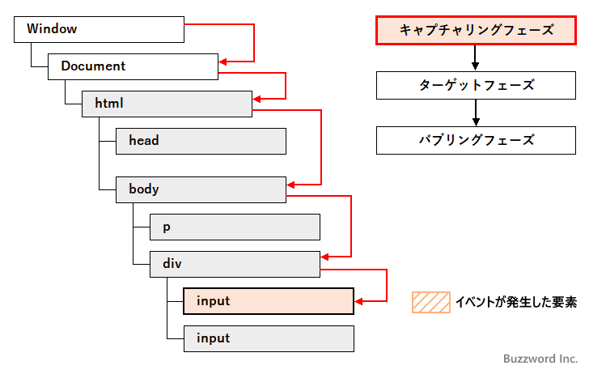
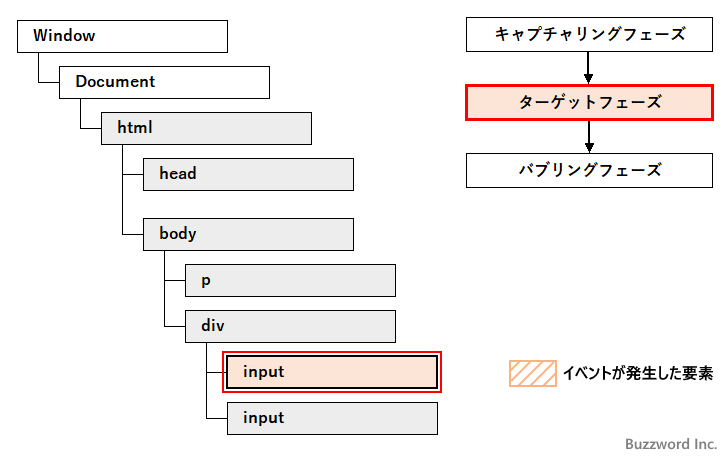
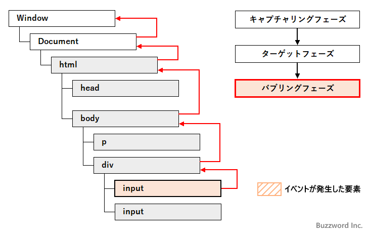
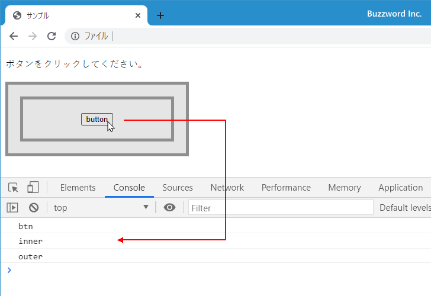
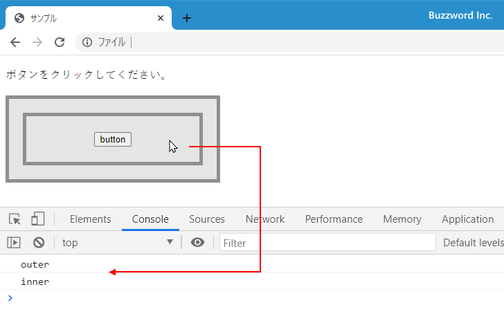

- Home ›
- JavaScript入門 ›
- イベント処理
イベントの伝搬(キャプチャリングとバブリング)
HTML ページ内の要素で何らかのイベントが発生した場合、その要素だけでイベントが発生するのではなくその要素の親要素へ順にイベントが伝搬していき、親要素でも同じイベントが発生します。ここではイベントが DOM ツリーの中をどのように伝搬していくのかについて解説します。
イベントが伝搬していく仕組み
例えば次のような HTML ページを例で考えてみます。
<html>
<head></head>
<body>
<p>Stopwatch</p>
<div>
<input type="button" value="start" id="btn1">
<input type="button" value="stop" id="btn2">
</div>
</body>
</html>
この HTML ページの中の 'start' ボタンがクリックされたときに、クリックイベントがどのように発生しどのように伝搬していくのかを見ていきます。
キャプチャリングフェーズ
HTML ページの中の 'start' ボタンがクリックされると、一番最上位のオブジェクトである Window オブジェクトでまず click イベントが発生します。そして Document オブジェクト、 html 要素、 body 要素、 div 要素と DOM ツリーを下へ向かって順番に click イベントが発生していきます。
この段階をキャプチャリングフェーズと呼びます。

ただキャプチャリングフェーズのときに発生したイベントは、ほとんどの場合使用されません。要素の属性や要素のプロパティにイベントハンドラを登録した場合、キャプチャリングフェーズでイベントが発生してもイベントハンドラは呼び出されません。
addEventListener メソッドでイベントリスナーが登録されるときに、 3 番目の引数に true または {capture: true} を指定した場合にだけキャプチャリングフェーズで発生したイベントによってイベントリスナーが呼び出されます。
button.addEventListener('click', butotnClick, true);
button.addEventListener('click', butotnClick, {capture: true});
3 番目の引数は省略可能な引数で、デフォルトの値は false となっています。その為、明示的に指定しない場合は addEventListener メソッドでイベントリスナーを登録していてもキャプチャリングフェーズで発生したイベントではイベントリスナーは呼び出されません。
ターゲットフェーズ
そしてキャプチャリングフェーズのあと、実際にイベントが発生した要素で click イベントが発生します。この段階をターゲットフェーズと呼びます。

ターゲットフェーズでイベントが発生すると、そのイベントに対して登録されたすべてのイベントハンドラやイベントリスナーが呼び出されます。
バブリングフェーズ
ターゲットフェーズのあと、今度は逆にイベントが発生した要素の親要素である div 要素から、 body 要素、 html 要素、 Document オブジェクト、 Window オブジェクトまで DOM ツリーを上へ向かって順番に click イベントが発生していきます。この段階をバブリングフェーズと呼びます。
ただし Window オブジェクトや Document オブジェクトで発生しないイベントの場合はその手前の html 要素までとなる場合もあります。

バブリングフェーズで発生したイベントも、ごく一部のイベントを除いてそのイベントに対して登録されたイベントハンドラやイベントリスナーが呼び出されます。 focus イベントや blur イベントは Event.bubbles プロパティが false となっているため、バブリングフェーズによるイベントの伝搬を行いません。
-- --
このように例えば HTML ページ内の要素で何らかのイベントが発生した場合、通常はターゲットフェーズで実際に発生した要素でイベントが発生したあと、バブリングフェーズで実際にイベントが発生した要素から Window オブジェクトまで DOM ツリーを親要素に向かってのぼっていき、経路にある要素やオブジェクトで同じイベントが発生します。
次のサンプルを見てください。
<!DOCTYPE html>
<html lang="ja">
<head>
<meta charset="UTF-8">
<title>サンプル</title>
<style type="text/css">
div {
background-color:#E5E5E5;
border:5px solid #8f8f8f;
}
#outer{
width:300px;
}
#inner{
margin:20px;
padding:20px;
text-align:center;
}
</style>
</head>
<body>
<p>ボタンをクリックしてください。</p>
<div id="outer">
<div id="inner">
<input type="button" value="button" id="btn">
</div>
</div>
<script>
let outer = document.getElementById('outer');
let inner = document.getElementById('inner');
let btn = document.getElementById('btn');
outer.addEventListener('click', function(){
console.log('outer');
});
inner.addEventListener('click', function(){
console.log('inner');
});
btn.addEventListener('click', function(){
console.log('btn');
});
</script>
</body>
</html>
外側の div 要素の中に内側の div 要素があり、さらに内側に input 要素があります。それぞれの要素には click イベントに対するイベントリスナーが登録されています。今回は addEventListener メソッドの 3 番目の引数を省略しているのでキャプチャリングフェーズのイベントが発生してもイベントリスナーは呼び出されません。
最初に input 要素をクリックしてみます。すると、 input 要素のイベントリスナーだけでなく、親要素の内側の div 要素、そしてさらに親要素の外側の div 要素のイベントリスナーが呼び出されます。

次に内側の div 要素をクリックしてみます。すると内側の div 要素のイベントリスナーが呼び出されたあと、親要素の外側の div 要素のイベントリスナーが呼び出されます。
キャプチャリングフェーズで発生したイベントでイベントリスナーを呼び出す
キャプチャリングフェーズで発生したイベントをイベントリスナーを呼び出すには、 addEventListener メソッドでイベントリスナーが登録されるときに、 3 番目の引数に true または {capture: true} を指定します。
button.addEventListener('click', butotnClick, true);
button.addEventListener('click', butotnClick, {capture: true});
3 番目の引数で単に true または false を指定した場合、キャプチャリングフェーズでのイベントでイベントリスナーを呼び出すかどうかの設定となります。 3 番目の引数を省略した場合のデフォルトの値は false です。他に 3 番目の引数にはオブジェクトの値として {capture: true} のように指定することもできます。
キャプチャリングフェーズでのイベントでイベントリスナーを呼び出すように設定した場合、バブリングフェーズでのイベントではイベントリスナーが呼び出されなくなります。
次のサンプルを見てください。
<!DOCTYPE html>
<html lang="ja">
<head>
<meta charset="UTF-8">
<title>サンプル</title>
<style type="text/css">
div {
background-color:#E5E5E5;
border:5px solid #8f8f8f;
}
#outer{
width:300px;
}
#inner{
margin:20px;
padding:20px;
text-align:center;
}
</style>
</head>
<body>
<p>ボタンをクリックしてください。</p>
<div id="outer">
<div id="inner">
<input type="button" value="button" id="btn">
</div>
</div>
<script>
let outer = document.getElementById('outer');
let inner = document.getElementById('inner');
let btn = document.getElementById('btn');
outer.addEventListener('click', function(){
console.log('outer');
}, true);
inner.addEventListener('click', function(){
console.log('inner');
}, true);
btn.addEventListener('click', function(){
console.log('btn');
}, true);
</script>
</body>
</html>
外側の div 要素の中に内側の div 要素があり、さらに内側に input 要素があります。それぞれの要素には click イベントに対するイベントリスナーが登録されています。今回は addEventListener メソッドの 3 番目の引数に true を設定しているのでキャプチャリングフェーズのイベントが発生したときにイベントリスナーが呼び出されます。
最初に input 要素をクリックしてみます。すると、まず外側の div 要素、内側の div 要素、最後に実際にイベントが発生した input 要素のイベントリスナーが呼び出されます。
次に内側の div 要素をクリックしてみます。すると外側の div 要素のイベントリスナーが呼び出されたあと、実際にイベントが発生した内側の div 要素のイベントリスナーが呼び出されます。

-- --
イベントが DOM ツリーの中をどのように伝搬していくのかについて解説しました。
( Written by Tatsuo Ikura )

著者 / TATSUO IKURA
初心者～中級者の方を対象としたプログラミング方法や開発環境の構築の解説を行うサイトの運営を行っています。